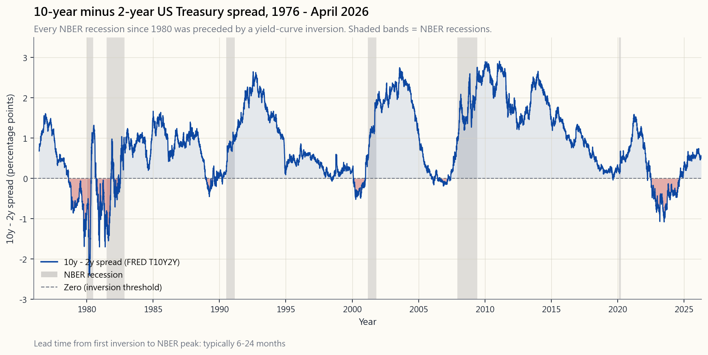
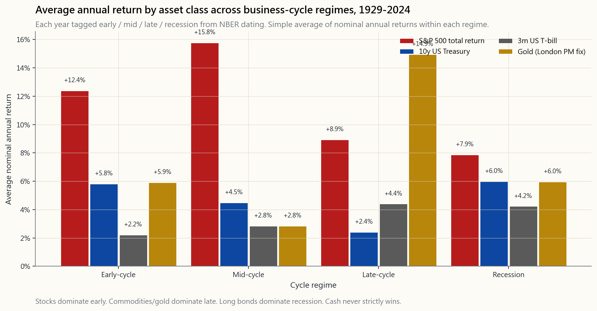

Week 10: Economic Cycles — Expansion, Peak, Contraction, Trough, and What They Do to Assets
1. Why This Is Important
The economy does not move in a straight line, and neither does any asset that ultimately depends on the economy for its cash flow. It expands, it overheats, it contracts, it recovers, and then it does the whole thing again. The names for the four stops on that loop — expansion, peak, contraction, trough — are over a hundred years old. The pattern is older than that.
You need to take cycles seriously for four reasons.
expansion, commodities lead in late expansion, long bonds lead into and through recession, cash leads only briefly at the very top. A portfolio built for one phase can spend a year or two doing nothing right and a year doing everything wrong. You do not have to time the cycle precisely; you do have to know which phase you are in roughly, because some assets are quietly cheap at every point in the cycle and some are quietly expensive, and the difference is usually larger than the equity risk premium itself.
Since 1945 the United States has had thirteen recessions. The average expansion is about five years and the average contraction is about eleven months. Anyone who tells you "the business cycle is dead" is forgetting that the same thing was said in 1929, 1968, 1999, and 2007. The cycle does not disappear. It just changes shape.
ambiguous exception.** That is an extraordinary track record for a single indicator, and it is freely published. If you ignore only one signal in this entire course, do not let it be the 10y minus 2y Treasury spread.
complacent one.** Week 4 showed that the long-run statistics on 60/40 are excellent. This week shows the statistics underneath the statistics: 60/40 is a regime bet, and the regime can change. The regime-shift point — passive index investing has worked for forty years, and that does not make it permanent — lives or dies on the cycle.
This lesson covers NBER dating, the layered short / medium / long cycles, the three families of indicators, the yield curve in detail, the asset-class playbook by phase, and what 2008, 2020, 2022, and the 2026 setup teach about how the textbook fails when the cycle stops cooperating.
2. What You Need to Know
2.1 NBER Dating — Who Decides a Recession Has Happened
The popular shorthand "two consecutive quarters of negative GDP" is not the official US definition. The actual arbiter is the **Business Cycle Dating Committee of the National Bureau of Economic Research (NBER)** — eight academic economists who, after the fact, declare a peak month and a trough month. Their working definition of a recession:
A significant decline in economic activity that is spread across the economy and lasts more than a few months, normally visible in real GDP, real income, employment, industrial production, and wholesale-retail sales.
Three things follow.
- Recessions are dated by month, not quarter. February 2020 is
- Recessions are declared late. The committee waits until
- The criteria are plural. Real GDP can be negative for two
The full US post-1945 recession list, with peak → trough months:
| # | Peak | Trough | Length |
|---|---|---|---|
| 1 | Nov 1948 | Oct 1949 | 11 mo |
| 2 | Jul 1953 | May 1954 | 10 mo |
| 3 | Aug 1957 | Apr 1958 | 8 mo |
| 4 | Apr 1960 | Feb 1961 | 10 mo |
| 5 | Dec 1969 | Nov 1970 | 11 mo |
| 6 | Nov 1973 | Mar 1975 | 16 mo |
| 7 | Jan 1980 | Jul 1980 | 6 mo |
| 8 | Jul 1981 | Nov 1982 | 16 mo |
| 9 | Jul 1990 | Mar 1991 | 8 mo |
| 10 | Mar 2001 | Nov 2001 | 8 mo |
| 11 | Dec 2007 | Jun 2009 | 18 mo |
| 12 | Feb 2020 | Apr 2020 | 2 mo |
Twelve recessions in eighty years. Average expansion length between them: about sixty-three months. The longest expansion ever recorded — June 2009 through February 2020 — was 128 months and ended only because of an exogenous shock (COVID), not internal overheating. That fact matters: not every cycle ends from the inside.
2.2 Cycles Within Cycles — Kitchin, Juglar, Kondratieff
The textbook usually presents one cycle. The honest picture is that there are several, layered on top of each other.
- Kitchin (~3–5 years). Inventory cycle. Firms over-order →
- Juglar (~7–11 years). Capex cycle. Firms invest in fixed
- Kondratieff (~40–60 years). Long wave. Driven by
We do not trade Kitchin / Juglar / Kondratieff as numerology ("the next 9.6-year cycle peaks in October 2027"). The numbers above are not deterministic. We use the intuition — that there are short, medium, and long cycles superimposed, and that the phase you are in depends on which cycle you are looking at. The 2022 inflation shock was a Juglar peak inside a possibly-cresting Kondratieff. That is a different setup from 2008, when both medium and long waves were still on the up-leg of disinflation, and it explains why the same playbook (Fed cuts → bonds rally, stocks rally) worked in 2008 and did not work in 2022.
The four-quadrant framework — growth up/down crossed with inflation up/down — is the practical version of this. We use it in §2.5.
2.3 Leading, Coincident, and Lagging Indicators
Every economic data series falls into one of three categories according to its timing relative to the cycle.
- Leading indicators turn before the economy does. The
- Coincident indicators turn with the economy. Industrial
- Lagging indicators turn after the economy does. The
The single most common retail mistake is to treat lagging indicators as decision-grade. "The unemployment rate is 3.8% — the economy is fine" is a 2007 sentence. Unemployment was 4.7% in November 2007, the month the previous expansion peaked, and it peaked at 10.0% twenty-three months later. By the time unemployment confirms a recession is underway, the stock market has already lost a third of its value. The yield curve, by contrast, told you there was a problem in mid-2006.
The honest hierarchy: **price data first, soft data second, hard data third, lagging data never as a primary signal.** Price data is the yield curve, credit spreads, equity sector leadership, the copper-to-gold ratio. Soft data is the surveys (ISM, consumer confidence). Hard data is the official prints (payrolls, GDP, production). Each is roughly a quarter slower than the one before. The cycle's leading edge lives in markets, not in the data release calendar.
2.4 The Yield Curve — The Master Leading Indicator
The single most reliable leading indicator of US recessions is the slope of the Treasury yield curve, conventionally measured as the 10-year yield minus the 2-year yield (or the 10-year minus the 3-month). When that spread goes negative — long rates below short rates — the curve is inverted.
![10-year minus 2-year US Treasury spread from 1976 through April 2026 (FRED T10Y2Y / DGS10 minus DGS2). Grey vertical bands shade NBER recessions (1980, 1981–82, 1990–91, 2001, 2008–09, 2020). Each NBER recession in the period is preceded by a multi-month inversion of the spread; the lead time from first inversion to recession start ranges from about ten to twenty-four months. The 2022–2024 inversion is the deepest of the post-1976 era; the curve re-steepened through 2024–25 ahead of the slowdown markets are pricing into spring 2026.](image/week10_yield_curve_recessions.png)
Why does inversion predict recession?
- It compresses bank profitability. Banks borrow short and
- It is the bond market's verdict on Fed policy. A 10-year
- Inversion → expectation → behavior. Once corporate
Lead time from first inversion to NBER peak in the post-1976 era:
| First inversion | NBER peak | Lead |
|---|---|---|
| Aug 1978 | Jan 1980 | 17 mo |
| Sep 1980 | Jul 1981 | 10 mo |
| Dec 1988 | Jul 1990 | 19 mo |
| Feb 2000 | Mar 2001 | 13 mo |
| Jan 2006 | Dec 2007 | 23 mo |
| Aug 2019 | Feb 2020 | 6 mo (then COVID) |
| Jul 2022 | TBD 2026? | 22+ mo |
Two warnings before you turn this into a personal market-timing system. First, the lead time is variable — you cannot use inversion as a "sell now" signal without giving up two to three years of late-cycle equity returns. Second, the un-inversion (when the curve re-steepens after being inverted) is historically a closer-to-the-event signal than the inversion itself. The re-steepening in late 2024 / early 2025 is the part of this playbook to watch through 2026.
2.5 Asset Performance by Regime
The single best summary of how asset classes behave across the cycle uses a four-regime framework based on the direction of real GDP growth and proximity to a recession.
- Early-cycle (recovery). Recession just ended; growth is
- Mid-cycle. Growth is steady, inflation is contained, rates
- Late-cycle. Growth is still positive but decelerating;
- Recession. Growth is negative; inflation is falling (the
A static bar chart of the four-regime average annual return for the four major asset classes across 1929–2024:
![Average annual return by asset class across four regimes (early-cycle, mid-cycle, late-cycle, recession), 1929–2024. Stocks (S&P 500 total return), 10-year Treasuries, 3-month T-bills, gold. Each year tagged with one regime; bars show the simple average of nominal annual returns within each regime. Stocks earn their highest average in mid-cycle (~+16%) and their lowest in recession (~+8%, dragged up by snap-back years like 1933 and 1954); long bonds earn their highest in recession (~+6%) and their lowest in late-cycle (~+2%); T-bills are roughly flat across regimes (2-4%); gold is best in late-cycle (~+15%) and worst in mid-cycle (~+3%).](image/week10_asset_class_by_regime.png)
Read the chart with three mental rules:
- The regime gap is large for the volatile assets. Stocks vary
- Recession-year stock returns look surprisingly positive.
- No single asset wins every regime. That is why the four
The interactive Regime Explorer below lets you click any year from 1929 forward and see (a) which regime it was tagged with, (b) the realised one-year forward return of each of the four asset classes from that year, and (c) the average of all years sharing that regime. The exercise that does the most for your intuition: click 2007, then 2008, then 2009. Watch the sequence flip from late-cycle to recession to early-cycle, and watch the optimal asset class flip with it.
2.6 2008, 2020, 2022, and 2026
Four recent setups, each useful for a different reason.
2008 — the disinflation playbook works. Late-cycle imbalance (housing credit), recession, Fed cuts to zero, inflation collapses, long Treasuries rally violently (+20% in 2008), equities bottom in March 2009, the textbook 60/40 recovery unfolds across 2009–2010 almost on schedule. The cycle obeyed the textbook.
2020 — the exogenous shock case. A global health shock arrives, NBER calls the shortest recession in history (two months), the Fed and Treasury combine for the largest stimulus in peacetime. Long Treasuries, gold, and stocks all rally together because the response was overwhelming. This was not a cycle in the Juglar sense; the imbalances had not built up. Importantly, that response left a gigantic monetary overhang that became the input for 2022.
2022 — the textbook fails. Inflation surges to 9% on the back of the 2020–21 stimulus and supply shocks. The Fed hikes 425 bp in nine months. Long Treasuries lose 18%. Stocks lose 18%. 60/40 has its second-worst calendar year in history. The cycle was not a normal late-cycle / recession arc; it was a late-cycle inflation shock without a recession, and the disinflation playbook stopped working. The regime-shift point — *forty years does not make passive permanent* — earned its keep that year.
2026 (the live setup as of this writing). The yield curve inverted in July 2022 and re-steepened over 2024–25. Headline inflation is back near 3% but services inflation is sticky. Unemployment has drifted from a cycle low of 3.4% to roughly 4.5%. The S&P 500 hit a new high in late 2024 driven mostly by megacap AI capex. The leading indicators — yield curve re-steepening, ISM new-orders sub-50, jobless claims drifting up — are pointing at a 2026 slowdown. Whether it gets dated as a recession is a coin flip. **The lesson is not which way to bet but which signals to watch:** payroll diffusion, the credit spread index, and the ratio of cyclicals to defensives in the S&P 500. Those will turn before the price index does.
2.7 The Forty-Year Frame — Where the Regime Question Lives
Each Juglar cycle is about a decade. Each Kondratieff is about forty years. The forty-year disinflationary bull market that ran from August 1981 (Volcker peak) through the 2021 zero-rate top was one Kondratieff up-leg. Within it there were five Juglar recessions (1990, 2001, 2008, 2020) and roughly ten Kitchin inventory cycles. Every one of those Juglar recessions was followed by a stronger up-leg, because the Kondratieff backdrop was still disinflation and falling rates.
The 2022 inflation shock was the first material data point suggesting the Kondratieff backdrop may have flipped. We do not know yet — these things resolve over a decade, not a quarter. But the possibility of the flip is what makes the discipline of cycle-aware allocation matter more in the next ten years than it did in the last forty. When the backdrop is a smooth disinflationary tailwind, "buy and hold the index" is right ~95% of years. When the backdrop is uncertain, the cycle is the difference between making 8% real and losing 4% real.
3. Common Misconceptions
stock market typically peaks six to nine months before the NBER peak and bottoms six to nine months before the NBER trough. By the time a recession is confirmed, the market has usually done most of its damage and is partway through its recovery. Investors who wait for the headline announcement to re-enter buy the recovery rather than the bottom.
useful headline but not the official rule. NBER uses depth, diffusion, and duration across multiple series. The first half of 2022 was negative real GDP and was not dated as a recession because employment kept rising.
every recession ("a new economy"), and was said again in 2023 when the recession people expected within a year of inversion did not arrive. The signal's lead time has always been wide (six to twenty-four months); a twenty-month delay is normal, not a failure.
is the most lagging of the lagging indicators. It is the worst summary statistic for current cycle position and the best summary statistic for the previous cycle position.
saves the market when inflation is below target. When inflation is above target, as in 2022, the Fed and the market are on opposite sides of the trade — that is the entire point of the dual mandate. Conditioning on the post-1995 era of Greenspan / Bernanke / Yellen / Powell put expectations is an example of recency bias.
dichotomy between precise timing (impossible) and *broad phase awareness* (clearly value-additive in the historical record). The four-regime asset performance gap is large enough that you do not need to be early or right at every turn. Getting one phase shift correct per decade pays for the discipline.
60/40 year in eighty-five years and the second-worst in ninety-five. That is a statistically uncomfortable observation, not a structural one. Across the 95-year record, 60/40 has produced positive nominal returns in roughly 80% of calendar years. The 2022 lesson is that the stock-bond correlation is regime-dependent — a refinement, not a refutation.
of inflation that runs through tradeable goods (energy, metals, food). They do not hedge service-sector inflation (rents, wages, healthcare). The 2022 inflation shock was tradeable; the 2024–25 stickiness is service-sector. Different hedge needed.
primarily driven by real interest rates. Falling real rates help gold; rising real rates hurt it. That happens to coincide with inflation surprises sometimes, but the cleaner driver is the real-rate path, which is also why gold rallied from $1,800 in late 2023 to over $3,000 by 2025 even as headline inflation moderated.
The technology, the leadership stocks, and the policy details are different every time. The cycle structure — credit expansion, capex overshoot, central-bank tightening, slowdown, cuts, recovery — is not. Both halves of that statement matter.
4. Q&A Section
**Q1. If recessions are dated only after the fact, how is the information useful in real time?** A. It is useful in two ways. First, the historical pattern lets you put present readings (yield curve, payroll diffusion, ISM, high-yield credit spreads) on a calibration curve and assign rough probabilities. Second, the response-side discipline does not depend on knowing the start date precisely: when the leading indicators turn negative, you trim equity beta and add long-bond duration gradually. That is far cheaper than waiting for the NBER announcement, which arrives after the easy money has been made.
Q2. Should I sell stocks the moment the yield curve inverts? A. No. The lead time from first inversion to recession peak has ranged from six to twenty-four months. Selling on day one of inversion has historically meant giving up six to twelve months of further equity gains, often the best of the cycle. A more defensible playbook: at first inversion, stop adding equity risk, lengthen bond duration, and let payrolls / claims / credit spreads tell you when the actual rollover begins.
Q3. Why does cash do so badly across most regimes? A. Cash earns roughly the short rate, which is roughly inflation plus a small real premium in the long run. After taxes and inflation, the long-run real return on cash is close to zero. The only regime where cash strictly wins is the very brief window at the cycle peak when yields are high and risk assets are falling — and that window is usually six to twelve months, not the multi-year holdings most retail "cash on the sidelines" positions become.
**Q4. What is the difference between a recession and a bear market?** A. A recession is an economic event (output, employment, sales, income falling). A bear market is a price event (a major index falling 20% or more from its peak). They overlap but are not the same: 2018's S&P 500 drawdown was 19.8% with no recession; 2008–09 had both. The bear market is usually the bond market's and the stock market's anticipation of the recession to come plus the reaction once it arrives.
Q5. Are emerging markets and the US on the same cycle? A. Loosely. US monetary policy is the gravitational center — when the Fed tightens, dollar liquidity tightens for the world — but emerging market cycles can lead or lag the US by quarters because of commodity exposure, debt structure, and capital flows. We do not invest in non-US equity directly under this course's investable-universe rule; if you want exposure to the EM cycle, do it through US-listed multinationals or US-listed EM ETFs.
**Q6. What is "stagflation" and where does it fit in the four-quadrant framework?** A. Stagflation is the diagonal: growth falling and inflation rising. Late-cycle into recession with inflation refusing to roll over. Asset performance under stagflation is genuinely difficult because both legs of 60/40 lose: stocks fall on growth, long bonds fall on inflation. Commodities, gold, short-duration inflation-protected bonds, and equity sectors with pricing power (energy, staples) are the survivors. 1973–75 and 2022 are the two clearest US examples of the post-war era.
Q7. How long is the average expansion really? A. Post-1945, US expansions have averaged about sixty-three months from trough to next peak. Six of the twelve post-1945 expansions ran longer than five years. The two longest — 1991– 2001 and 2009–2020 — both ended with a one-time event (tech bubble unwinding plus 2001 recession; COVID for 2020), and without those endings each would have run further. Expansions do not die of old age; they die of imbalance plus a trigger.
**Q8. Where does the Federal Reserve's balance sheet fit in this framework?** A. As a liquidity layer underneath the cycle. The textbook cycle is about the real economy. Quantitative easing and quantitative tightening change the price of risk assets even when the real-economy cycle has not changed. The 2009–2014 QE era and the 2020–21 QE pulse are both clearer in equity index prices than in GDP data — which is part of why headline P/E ratios have drifted upward without earnings growth keeping pace. We come back to this in the central bank week.
**Q9. Should retirees and accumulators read the cycle the same way?** A. No. An accumulator with twenty years to compound benefits from buying into recessions because they are dollar-cost averaging at lower prices. A retiree with a five-to-ten-year spending horizon is on the wrong side of the cycle if the sequence of returns is bad early. The barbell (long Treasuries + equities) and the four-tranche structure exist mostly for the retiree case; an accumulator can run a simpler 60/40 if they have the discipline to keep buying through a 2008.
Q10. Is the 2026 setup more like 1973–75, 2008, or 2020? A. None of them cleanly. The closest analogue is probably the late 1960s into the early 1970s — the end of one Kondratieff disinflationary regime, sticky service inflation, an asset bubble in a narrow leadership group (Nifty Fifty then, AI megacaps now), and a fiscal trajectory that constrains how much the Fed can ease without re-igniting inflation. The lesson from that era is not "buy gold and run for the hills" — equity markets returned roughly nothing in real terms over the 1965–1982 stretch, but the years inside it were highly tradeable on a phase-aware basis. The discipline this lesson is teaching matters a great deal more in that kind of decade than it did in 2010–2020.
第十週：經濟週期——擴張、頂峰、收縮、谷底，以及它們對各類資產的影響
1. 為何此課題至關重要
經濟從不沿直線運行，任何最終依賴經濟產生現金流的資產亦然。它擴張、過熱、收縮、復甦，然後再周而復始。這個循環的四個節點——擴張、頂峰、收縮、谷底——這些名稱已有逾百年歷史，而這個規律本身則更為古老。
認真對待週期，有四個原因。
本課涵蓋NBER週期劃定方法、短/中/長週期的層疊結構、三類指標體系、收益率曲線的詳細分析、各階段資產類別操作指引，以及2008年、2020年、2022年和2026年格局對教科書失效時的啟示。
2. 必須掌握的知識
2.1 NBER週期劃定——誰來決定衰退已經發生
坊間流行的說法——「連續兩個季度本地生產總值負增長」——並非美國的官方定義。真正的仲裁機構是美國全國經濟研究局（NBER）商業週期鑑定委員會——由八位學術經濟學家組成，事後宣布頂峰月份及谷底月份。其對衰退的工作定義為：
經濟活動出現顯著下滑，波及整體經濟，持續時間超過數月，通常體現在實際本地生產總值、實際收入、就業、工業生產及批發零售銷售的下降。
由此引申出三點。
- 衰退以月份而非季度劃定。 2020年2月為頂峰，2020年4月為谷底。歷時兩個月——美國有史以來最短的衰退。「兩個季度」規則根本無法識別它。
- 衰退的宣布滯後。 委員會等待數據修訂完成，通常在頂峰之後六至十八個月才宣布。等到NBER正式宣布衰退開始時，股市往往已觸底並開始反彈。這正是散戶「等待衰退確認後才入市」最終買貴的頭號實際原因。
- 判斷標準是多維的。 實際本地生產總值可以連續兩個季度負增長，但不被NBER認定為衰退（2022年上半年的技術性衰退未被認定，因為就業和工業生產持續上升）。NBER亦可在夾雜一個正增長季度的情況下認定衰退（1980年即為此例）。
| # | 頂峰 | 谷底 | 持續時間 |
|---|---|---|---|
| 1 | 1948年11月 | 1949年10月 | 11個月 |
| 2 | 1953年7月 | 1954年5月 | 10個月 |
| 3 | 1957年8月 | 1958年4月 | 8個月 |
| 4 | 1960年4月 | 1961年2月 | 10個月 |
| 5 | 1969年12月 | 1970年11月 | 11個月 |
| 6 | 1973年11月 | 1975年3月 | 16個月 |
| 7 | 1980年1月 | 1980年7月 | 6個月 |
| 8 | 1981年7月 | 1982年11月 | 16個月 |
| 9 | 1990年7月 | 1991年3月 | 8個月 |
| 10 | 2001年3月 | 2001年11月 | 8個月 |
| 11 | 2007年12月 | 2009年6月 | 18個月 |
| 12 | 2020年2月 | 2020年4月 | 2個月 |
八十年間共十二次衰退。兩次衰退之間的平均擴張期長度：約六十三個月。有史以來最長的擴張期——2009年6月至2020年2月——長達128個月，且僅因外部衝擊（新冠疫情）而終結，並非因內部過熱所致。這一事實至關重要：並非每一個週期都從內部崩潰。
2.2 週期中的週期——基欽週期、朱格拉週期、康德拉季耶夫週期
教科書通常呈現單一週期。誠實的圖景是：存在多個週期，層疊疊加。
- 基欽週期（約3至5年）。 庫存週期。企業過量採購→庫存積壓→削減訂單→庫存消化→重新採購。製造業採購經理人指數的波動主要由此驅動。每月經濟數據的大部分雜訊來自基欽週期。
- 朱格拉週期（約7至11年）。 資本支出週期。企業投資固定資本（廠房、設備、軟件）。產能超過需求，資本支出收縮，衰退隨之而來，週期重置。這是大多數投資者提到「商業週期」時所指的衰退週期。戰後美國擴張期平均長度恰好落在朱格拉週期的區間內。
- 康德拉季耶夫週期（約40至60年）。 長波週期。由技術革命、人口結構及貨幣制度驅動。蒸汽機、鐵路、電氣化、汽車、半導體、互聯網——每一項都奠定了一個長波。制度轉變點所談的正是這個波浪。 從1981年8月至2021年零利率頂峰的四十年通縮牛市，是一個康德拉季耶夫上升期。下一個不會看起來一模一樣。
增長上升/下降與通脹上升/下降交叉形成的四象限框架，是上述邏輯的實用版本。我們將在第2.5節中使用它。
2.3 領先、同步與滯後指標
每個經濟數據系列相對於週期的時間關係，可歸入以下三類之一。
- 領先指標在經濟轉向之前先行轉向。收益率曲線斜率、建築許可、ISM新訂單分項指數、初次申請失業救濟人數、標普500指數本身，以及世界大型企業研究所的領先經濟指數（LEI），均屬經典例子。領先時間通常為六至十八個月。
- 同步指標與經濟同步轉向。工業生產、剔除轉移支付後的實際個人收入、實際製造業及零售銷售，尤其是非農就業人數。這四項大致是NBER實際用以劃定週期的變量。領先時間：零。
- 滯後指標在經濟轉向之後才轉向。失業率、核心消費物價指數、最優惠貸款利率、失業持續時間、消費信貸與個人收入之比。滯後時間：三至十二個月。
誠實的信號層級：價格數據優先，軟性數據其次，硬性數據再次，滯後數據永不作為主要信號。 價格數據包括收益率曲線、信用利差、板塊領漲輪動、銅金比率。軟性數據是調查數據（ISM、消費者信心）。硬性數據是官方公布數字（就業、本地生產總值、生產數據）。每一層大約比前一層慢一個季度。週期的領先邊緣存在於市場之中，而非數據發布日曆之上。
2.4 收益率曲線——頂級領先指標
預測美國衰退最可靠的單一領先指標，是國債收益率曲線的斜率，通常以10年期收益率減2年期收益率（或10年期減3個月期）來衡量。當該利差為負——長期利率低於短期利率——曲線即為倒掛。

為何倒掛能預測衰退？
- 它壓縮銀行盈利能力。 銀行以短期資金借入、以長期貸款放出。當短期利率超過長期利率時，每筆新發放貸款的利差都受到擠壓。銀行收緊放貸，信貸創造放緩，最具週期性的板塊（房屋、資本支出、汽車、小型企業）首當其衝。
- 這是債券市場對美聯儲政策的裁決。 10年期收益率低於2年期收益率，意味著長端在說：美聯儲已將短期利率加得過高，增長和通脹都將下滑，未來利率將走低。在此類宏觀預測上，債券市場的集體判斷出錯的次數，少於任何其他市場。
- 倒掛→預期→行為。 一旦企業財務總監、銀行信貸主任和財經媒體都在盯著倒掛的曲線，對衰退的預期本身就會引發衰退。資本支出被推遲，招聘放緩，裁員計劃開始醞釀。這個信號在一定程度上具有自我實現的性質。
| 首次倒掛 | NBER頂峰 | 領先時間 |
|---|---|---|
| 1978年8月 | 1980年1月 | 17個月 |
| 1980年9月 | 1981年7月 | 10個月 |
| 1988年12月 | 1990年7月 | 19個月 |
| 2000年2月 | 2001年3月 | 13個月 |
| 2006年1月 | 2007年12月 | 23個月 |
| 2019年8月 | 2020年2月 | 6個月（其後疊加新冠疫情） |
| 2022年7月 | 待定，2026年？ | 22個月以上 |
在你把這套邏輯變成個人擇時系統之前，有兩項警告。第一，領先時間是可變的——你不能以倒掛作為「立即沽售」的信號，否則將白白放棄兩至三年的後期週期股票回報。第二，解除倒掛（倒掛後曲線重新陡峭化）在歷史上比倒掛本身更接近於事件爆發的信號。2024年底至2025年初的重新陡峭化，才是貫穿2026年需要重點關注的部分。
2.5 各市場環境下的資產表現
以實際本地生產總值增長方向及與衰退的接近程度為基礎，四個市場環境框架是概括資產類別在週期中表現的最佳單一總結。
- 週期早期（復甦期）。 衰退剛結束；增長回升；通脹仍在下行；利率偏低。股票>公司債>國債>現金>商品。 股票貝塔為勝；週期性板塊領漲；細價股及高收益債券跑贏大市。這是風險資產整個週期中夏普比率最高的階段——歷史上標普500指數在NBER谷底後十二個月內的平均回報約為+35%。
- 週期中期。 增長穩定，通脹受控，利率正在正常化。股票>公司債>商品>國債>現金。 股票仍然勝出，但領漲板塊從週期性轉向增長股/優質股。這是持續時間最長的階段，對被動多頭倉位而言最為輕鬆。
- 週期晚期。 增長仍為正但正在放緩；通脹上升；中央銀行正在收緊。黃金/商品>現金>股票>公司債>國債。 實物資產領漲；能源及材料板塊跑贏；長存續期債券因收益率上升而受壓。這是60/40開始失效的階段，因為兩條腿同時承壓——2008年和2022年均屬於這個類別。
- 衰退期。 增長為負；通脹下行（滯脹是例外，見第2.6節）；中央銀行正在減息。長期國債>黃金>現金>股票>商品（在下行過程中），但以衰退標記的年份通常也包含一次復甦反彈（1933年、1954年、2009年），這拉高了全年股票實際平均回報。存續期受益；防守性股票板塊（必需消費品、醫療保健、公用事業）跑贏週期性板塊；隨著實際利率下行，黃金表現良好。

閱讀圖表時請牢記三條心理規則：
- 市場環境差距對波動性較大的資產影響顯著。 股票跨市場環境的波動約為8個百分點；黃金約12個百分點；長期債券約4個百分點。即便是粗略的階段判斷，所移動的預期回報也超過一整年的股票風險溢價。
- 衰退年份的股票回報看起來出人意料地正面。 這是因為NBER衰退年份往往包含復甦反彈——1933年（+50%）、1954年（+53%）、2009年（+26%）均落在衰退年份內。熊市的損失集中在週期晚期標記（涵蓋2008年和2022年），而非衰退期本身。
- 沒有任何單一資產在所有市場環境下都勝出。 這正是框架中四個倉位配置包含股票與長期國債啞鈴結構加上實物資產的原因。週期當下所不利的那條腿，恰恰是週期改變後的贏家。
2.6 2008年、2020年、2022年及2026年
四個近期格局，各有其獨到的啟示。
2008年——通縮操作指引奏效。 週期晚期失衡（房屋信貸），衰退，美聯儲減息至零，通脹崩潰，長期國債劇烈反彈（2008年+20%），股票於2009年3月見底，教科書式60/40復甦於2009至2010年幾乎如期展開。週期服從了教科書。
2020年——外部衝擊案例。 全球公共衛生衝擊來臨，NBER認定有史以來最短的衰退（兩個月），美聯儲及財政部聯手推出和平時期規模最大的刺激措施。長期國債、黃金和股票因響應規模壓倒性而齊聲反彈。這從朱格拉週期意義上並非一個正常週期；失衡尚未積累。值得注意的是，這次響應留下了巨大的貨幣超發，成為2022年的輸入條件。
2022年——教科書失效。 通脹因2020至21年的刺激措施及供應衝擊飆升至9%。美聯儲在九個月內加息425個基點。長期國債跌去18%。股票跌去18%。60/40取得有史以來第二差的年度表現。 週期並非正常的週期晚期/衰退弧線；而是一場無衰退伴隨的週期晚期通脹衝擊，通縮操作指引失靈。制度轉變點——四十年並不代表被動投資永久有效——當年印證了其價值。
2026年（截至撰文時的現況）。 收益率曲線於2022年7月倒掛，於2024至25年間重新陡峭化。整體通脹回落至接近3%，但服務業通脹依然黏性十足。失業率從週期低點3.4%逐步漂移至約4.5%。標普500指數在2024年底創出新高，主要由大型市值人工智能資本支出驅動。領先指標——收益率曲線重新陡峭化、ISM新訂單低於50、初次申請失業救濟人數緩慢上升——均指向2026年放緩。是否被認定為衰退，幾乎是各執一半。重點不在於賭哪個方向，而在於關注哪些信號： 就業增長擴散指數、信用利差指數，以及標普500指數內週期性板塊相對防守性板塊的比率。這些信號將在價格指數之前率先轉向。
2.7 四十年框架——制度問題所在之處
每個朱格拉週期約十年。每個康德拉季耶夫週期約四十年。從1981年8月（沃爾克加息頂峰）至2021年零利率頂峰運行的四十年通縮牛市，是一個康德拉季耶夫上升期。在此期間，出現了五次朱格拉衰退（1990年、2001年、2008年、2020年）及約十次基欽庫存週期。每一次朱格拉衰退之後都迎來了更強勁的上升期，因為康德拉季耶夫的背景仍是通縮和利率下行。
2022年的通脹衝擊，是第一個實質性數據點，暗示康德拉季耶夫背景可能已發生翻轉。目前尚不明朗——這類事情需要十年而非一個季度才能定論。但翻轉的可能性，使得週期感知配置的紀律在未來十年比過去四十年更為重要。當背景是平穩的通縮順風時，「買入並持有指數」在約95%的年份都是正確的。當背景不明朗時，週期就是實際回報8%與虧損4%之間的差距。
3. 常見誤解
4. 問答環節
問題一：若衰退僅在事後才被劃定，這些資訊在實時中如何有用？ 答：有用體現在兩方面。第一，歷史規律讓你能夠將當前讀數（收益率曲線、就業增長擴散指數、ISM、高收益信用利差）置於校準曲線上，並賦予粗略概率。第二，響應側的紀律並不依賴精確知道開始日期：當領先指標轉為負面，你逐步削減股票貝塔並增加長期債券存續期。這遠比等待NBER公告便宜——而公告到來時，容易賺的錢早已到手。
問題二：收益率曲線一旦倒掛，我是否應立即沽售股票？ 答：不應。從首次倒掛至衰退頂峰的領先時間歷來在六至二十四個月之間波動。在倒掛第一天沽售，歷史上意味著放棄六至十二個月的進一步股票升幅，往往是週期中最好的那部分。更為合理的操作指引是：首次倒掛時，停止增加股票風險，延長債券存續期，並讓就業/申請失業救濟人數/信用利差告訴你真正的拐點何時到來。
問題三：為何現金在大多數市場環境下表現都如此欠佳？ 答：現金賺取的大約是短期利率，長期來看大約等於通脹加一個小的實際溢價。扣除稅款和通脹後，現金的長期實際回報接近於零。現金嚴格佔優的唯一市場環境，是週期頂峰那個極短暫的視窗——利率高企而風險資產正在下跌——而這個視窗通常只有六至十二個月，遠短於大多數散戶「場外資金」持倉所持有的年數。
問題四：衰退與熊市有何區別？ 答：衰退是一個經濟事件（產出、就業、銷售、收入下降）。熊市是一個價格事件（主要指數從高位下跌20%或以上）。兩者有重疊但並不相同：2018年標普500的最大回撤為19.8%，未伴隨衰退；2008至09年則兩者兼有。熊市通常是債市和股市對即將到來的衰退的預期，加上衰退到來後的反應。
問題五：新興市場與美國是否處於同一個週期？ 答：大致如此。美國貨幣政策是引力中心——美聯儲收緊，全球美元流動性收緊——但新興市場週期可能因商品敞口、債務結構和資本流動而領先或滯後美國數個季度。本課程的可投資標的規則不直接投資非美國股票；若你希望獲得新興市場週期的敞口，可通過在美國上市的跨國公司或在美國上市的新興市場交易所買賣基金來實現。
問題六：何謂「滯脹」？它在四象限框架中處於什麼位置？ 答：滯脹是對角線狀態：增長下滑同時通脹上升。週期晚期進入衰退，但通脹拒絕回落。滯脹下的資產表現真的棘手，因為60/40的兩條腿都會虧損：股票因增長而跌，長期債券因通脹而跌。商品、黃金、短存續期通脹保值債券及具有定價能力的股票板塊（能源、必需消費品）是倖存者。1973至75年和2022年是戰後美國最典型的兩個例子。
問題七：平均擴張期究竟有多長？ 答：1945年後，美國擴張期平均從谷底至下一個頂峰約為六十三個月。戰後十二次擴張中，有六次持續超過五年。最長的兩次——1991至2001年及2009至2020年——均因一次性事件而終結（科技泡沫破裂及2001年衰退；新冠疫情導致2020年終結），若無這些終結事件，每一次本可持續更長。擴張期不會死於老化；它們死於失衡加上觸發因素。
問題八：美聯儲的資產負債表在這個框架中扮演什麼角色？ 答：作為週期之下的一個流動性層次。教科書週期關注的是實體經濟。量化寬鬆和量化收縮即使在實體經濟週期未改變的情況下，也會改變風險資產的價格。2009至2014年的量化寬鬆時代和2020至21年的量化寬鬆脈衝，在股票指數價格上的體現都比本地生產總值數據更為清晰——這也是為何整體市盈率在盈利增長未能跟上的情況下仍呈現上升趨勢。我們將在中央銀行那一週再回到這個話題。
問題九：退休人士和積累期投資者解讀週期的方式應該一樣嗎？ 答：不應該。一個有二十年複利期的積累期投資者，因為在較低價格持續買入，反而受益於衰退。一個只有五至十年支出視野的退休人士，若早期回報序列不佳，便站在週期的錯誤一側。啞鈴結構（長期國債+股票）和四組倉位架構主要針對退休人士的情況；若積累期投資者有紀律在2008年那樣的環境中持續買入，他們可以採用更簡單的60/40。
問題十：2026年的格局更像1973至75年、2008年還是2020年？ 答：三者都不完全吻合。最接近的類比可能是1960年代晚期進入1970年代初期——一個康德拉季耶夫通縮制度的尾聲，黏性的服務業通脹，少數領漲股票形成的資產泡沫（當年是「漂亮五十」，現在是人工智能大型市值股），以及制約美聯儲在不重新點燃通脹的情況下放寬政策的財政軌跡。那個時代的教訓並非「買黃金逃之夭夭」——在1965至1982年整個區間內，股市實際回報大致為零，但期間各年份以階段感知為基礎是高度可操作的。本課所傳授的紀律，在那種十年中的重要性，遠勝於2010至2020年。
第十週：經濟循環——擴張、高峰、收縮、谷底，以及它們對各類資產的影響
1. 為什麼這很重要
經濟不會沿著一條直線前進，任何最終依賴經濟產生現金流的資產也不例外。它擴張、過熱、收縮、復甦，然後整個過程重新來過。這個循環四個站點的名稱——擴張、高峰、收縮、谷底——已有超過一百年的歷史，而這個規律本身更是古老。
你需要認真看待循環，原因有四。
本課涵蓋NBER景氣日期認定、短中長期循環的層疊關係、三大類指標家族、殖利率曲線的詳細說明、各階段資產類別操作手冊，以及2008年、2020年、2022年和2026年的佈局如何揭示當循環不按教科書運作時的失敗模式。
2. 你需要了解的重點
2.1 NBER景氣日期認定——誰決定經濟衰退已發生
「連續兩季負成長的國內生產毛額」這個流行的速記，並非美國官方定義。實際的仲裁機構是全國經濟研究所（NBER）景氣循環日期認定委員會——八位學術經濟學家，在事後宣布高峰月份和谷底月份。他們對經濟衰退的工作定義為：
經濟活動的顯著下滑，遍及整個經濟體，持續超過數月，通常可從實質國內生產毛額、實質所得、就業、工業生產和批發零售銷售中觀察到。
由此產生三項推論。
- 經濟衰退以月份而非季度認定。 2020年2月是高峰；2020年4月是谷底。歷時兩個月——美國史上最短的經濟衰退。「兩季」法則完全無法捕捉。
- 經濟衰退的宣告往往滯後。 委員會通常等待數據修訂趨於穩定後才公布，通常是在高峰月份之後六到十八個月。等到NBER正式宣告某次衰退開始時，股市往往已經觸底並開始反彈。這是散戶投資人「等待衰退確認後再進場」會買在偏高位置、錯過復甦行情的最主要實務原因。
- 認定標準是多元的。 實質國內生產毛額可以連續兩季為負，但不被NBER認定為衰退（2022年上半年的技術性衰退未被認定，因為就業和工業生產持續上升）。而且NBER可以在中間夾有一個正成長季的情況下認定衰退（1980年）。
| # | 高峰 | 谷底 | 持續時間 |
|---|---|---|---|
| 1 | 1948年11月 | 1949年10月 | 11個月 |
| 2 | 1953年7月 | 1954年5月 | 10個月 |
| 3 | 1957年8月 | 1958年4月 | 8個月 |
| 4 | 1960年4月 | 1961年2月 | 10個月 |
| 5 | 1969年12月 | 1970年11月 | 11個月 |
| 6 | 1973年11月 | 1975年3月 | 16個月 |
| 7 | 1980年1月 | 1980年7月 | 6個月 |
| 8 | 1981年7月 | 1982年11月 | 16個月 |
| 9 | 1990年7月 | 1991年3月 | 8個月 |
| 10 | 2001年3月 | 2001年11月 | 8個月 |
| 11 | 2007年12月 | 2009年6月 | 18個月 |
| 12 | 2020年2月 | 2020年4月 | 2個月 |
八十年內十二次衰退。各次衰退之間的平均擴張期長度：約六十三個月。有史以來最長的擴張期——2009年6月至2020年2月——歷時128個月，且僅因外生衝擊（COVID）而結束，而非內部過熱所致。這個事實很重要：並非每一次循環都從內部終結。
2.2 循環中的循環——基欽、朱格拉、康德拉季耶夫
教科書通常只呈現一種循環。誠實的圖像是：有數個循環彼此疊加。
- 基欽循環（約3至5年）。 庫存循環。企業過度訂購→庫存積壓→削減訂單→庫存去化→重新訂購。製造業採購經理人指數便隨此而波動。月度經濟數據中的大多數雜訊都屬於基欽循環。
- 朱格拉循環（約7至11年）。 資本支出循環。企業投資固定資本（廠房、設備、軟體）。產能超過需求，資本支出收縮，經濟衰退隨之而來，循環重置。這正是大多數投資人所稱「景氣循環」的衰退循環。戰後美國平均擴張期長度，恰好落在朱格拉循環的區間內。
- 康德拉季耶夫循環（約40至60年）。 長波。由技術革命、人口結構體制、貨幣體制驅動。蒸汽、鐵路、電氣化、汽車、半導體、網際網路——每一項都奠定了一個長波的基礎。這正是體制轉變論點所討論的那個波浪。 從1981年8月（伏克爾緊縮高峰）到2021年零利率頂點的四十年反通膨多頭市場，是一個康德拉季耶夫上升波段。下一個不會長得一模一樣。
四象限框架——成長上升／下滑與通膨上升／下滑的交叉——是這個概念的實務版本。我們在§2.5中加以應用。
2.3 領先、同期與落後指標
每一個經濟數據系列，按其相對於循環的時機，都屬於三大類別之一。
- 領先指標在經濟之前先行轉折。殖利率曲線斜率、建築許可、ISM新訂單子指數、首次申請失業救濟金人數、S&P 500指數本身，以及美國諮商局領先經濟指數（LEI），都是典型代表。領先時間：通常為六至十八個月。
- 同期指標與經濟同步轉折。工業生產、實質個人所得（不含移轉性支付）、實質製造業和零售銷售，以及最重要的非農就業人數。這四項大致上就是NBER實際用來認定循環的變數。領先時間：零。
- 落後指標在經濟之後才行轉折。失業率、核心消費者物價指數、基準放款利率、失業持續時間、消費信貸對個人所得的比率。滯後時間：三至十二個月。
誠實的信任層級：價格數據優先，軟性數據其次，硬性數據再次，落後數據永遠不作為主要訊號。 價格數據是殖利率曲線、信用利差、股票類股領導地位、銅金比。軟性數據是調查（ISM、消費者信心）。硬性數據是官方公布數字（就業人數、國內生產毛額、工業生產）。每一層大約比前一層慢一季。循環的領先邊際存在於市場之中，而非數據發布日程表上。
2.4 殖利率曲線——最重要的領先指標
美國經濟衰退最可靠的單一領先指標，是國庫券殖利率曲線的斜率，通常以10年期殖利率減2年期殖利率（或10年期減3個月期）來衡量。當該利差轉負——長天期利率低於短天期利率——殖利率曲線便出現倒掛。
為何倒掛能預測衰退？
- 它壓縮銀行獲利空間。 銀行借入短期資金、放出長期貸款。當短天期利率超過長天期利率，每一筆新貸款的利差都被壓縮。銀行縮減放貸，信用創造放緩，最具景氣循環敏感性的類股（房屋、資本支出、汽車、小型企業）首先承壓。
- 這是債券市場對聯準會政策的裁決。 10年期殖利率低於2年期殖利率，代表長天期市場在說：聯準會短天期利率已升得太高，成長與通膨都將下滑，未來利率將會走低。 債券市場在此類總體經濟預測上，集體犯錯的頻率低於任何其他市場。
- 倒掛→預期→行為。 一旦企業財務長、銀行信貸主管和財經媒體都盯著倒掛的殖利率曲線，對衰退的預期本身就會導致衰退。資本支出遭推遲，招聘放緩，裁員計畫展開。這個訊號有部分是自我實現的。
| 首次倒掛 | NBER高峰 | 領先時間 |
|---|---|---|
| 1978年8月 | 1980年1月 | 17個月 |
| 1980年9月 | 1981年7月 | 10個月 |
| 1988年12月 | 1990年7月 | 19個月 |
| 2000年2月 | 2001年3月 | 13個月 |
| 2006年1月 | 2007年12月 | 23個月 |
| 2019年8月 | 2020年2月 | 6個月（隨後COVID） |
| 2022年7月 | 2026年待定？ | 22個月以上 |
在你將此轉化為個人的市場擇時系統之前，有兩點警告。第一，領先時間是可變的——你無法用倒掛作為「立即賣出」的訊號，否則將放棄兩至三年的週期末期股票報酬。第二，解除倒掛（殖利率曲線在倒掛後重新陡峭化）歷史上是比倒掛本身更接近事件發生的訊號。2024至2025年末的曲線陡峭化，正是這份操作手冊中，貫穿2026年值得密切關注的部分。
2.5 各體制下的資產表現
跨越景氣循環的資產類別行為，最佳的單一總結框架，是基於實質國內生產毛額成長方向及其與衰退距離的四體制框架。
- 循環初期（復甦期）。 衰退剛結束；成長反彈；通膨仍在下滑；利率偏低。股票>公司債>國庫券>現金>原物料。 股票貝塔獲勝；景氣循環類股領漲；小型股和高收益債券表現優異。以風險資產而言，這是整個循環中夏普比率最高的階段——歷史上S&P 500在NBER谷底後的首個十二個月，平均報酬約達+35%。
- 循環中期。 成長穩健，通膨受控，利率正常化中。股票>公司債>原物料>國庫券>現金。 股票仍勝出，但領漲類股從景氣循環型輪換至成長／品質型。就持續時間而言，這是最長的階段，也是被動做多最輕鬆的時期。
- 循環末期。 成長仍為正值但開始減速；通膨上升；中央銀行緊縮。黃金／原物料>現金>股票>公司債>國庫券。 實體資產領漲；能源和材料類股表現突出；長天期債券因殖利率上升而受損。在這個階段，60/40開始失效，因為兩條腿同時承壓——2008年和2022年都屬於這個範疇。
- 衰退期。 成長為負；通膨下滑（停滯性通膨是例外，詳見§2.6）；中央銀行降息。下跌過程中：長天期國庫券>黃金>現金>股票>原物料，但被標記為衰退年份的年分通常也包含一波復甦反彈（1933年、1954年、2009年），拉高了全年股票的實際平均報酬。存續期間勝出；防禦型股票類股（民生消費品、醫療保健、公用事業）優於景氣循環型；黃金在實質利率下滑時表現亮眼。
閱讀此圖時，請記住三條心理準則：
- 體制差距對波動性高的資產而言相當顯著。 股票在不同體制間的差距約8個百分點；黃金約12個百分點；長天期債券約4個百分點。即便是粗略的階段判斷，也能使預期報酬移動幅度超過一整年的股票風險溢酬。
- 衰退年份的股票報酬看起來出乎意料地正面。 這是因為NBER衰退年份往往涵蓋復甦反彈——1933年（+50%）、1954年（+53%）、2009年（+26%）都落在衰退年份內。熊市的損傷集中在循環末期標籤中（2008年和2022年均屬此類），而非衰退期本身。
- 沒有任何單一資產能在每個體制中勝出。 這正是框架中的四個部位，包含股票和長天期國庫券的槓鈴配置，以及實體資產的配置部位的原因。當前循環不利的那條腿，恰恰是當循環轉變時的贏家。
2.6 2008年、2020年、2022年和2026年
四個近期佈局，各自傳授不同的教訓。
2008年——反通膨操作手冊奏效。 循環末期失衡（房屋信貸）、衰退、聯準會降息至零、通膨崩落、長天期國庫券劇烈反彈（2008年+20%）、股票在2009年3月觸底、教科書式的60/40復甦在2009至2010年幾乎按時展開。循環遵照了教科書。
2020年——外生衝擊案例。 全球公衛衝擊來臨，NBER認定史上最短衰退（兩個月），聯準會和財政部聯手推出和平時期最大規模的刺激措施。長天期國庫券、黃金和股票同步上漲，因為應對措施是壓倒性的。這在朱格拉循環的意義上並非一次正常循環；失衡尚未積累。值得注意的是，這次應對遺留了巨量的貨幣超額供應，成為2022年的輸入條件。
2022年——教科書失效。 通膨在2020至2021年刺激措施和供給衝擊的推動下飆升至9%。聯準會在九個月內升息425個基點。長天期國庫券下跌18%。股票下跌18%。60/40創下歷史次差的單一曆年表現。 這次循環並非正常的循環末期／衰退弧線；而是一次沒有伴隨衰退的循環末期通膨衝擊，反通膨操作手冊因此失靈。體制轉變論點——四十年並不使被動投資成為永久真理——在那一年充分證明了其存在的價值。
2026年（本文撰寫時的當前佈局）。 殖利率曲線於2022年7月倒掛，並在2024至2025年逐步陡峭化。整體通膨率回到3%附近，但服務業通膨具有黏性。失業率從3.4%的循環低點漂移至約4.5%。S&P 500在2024年底創下新高，主要由少數超大型AI資本支出個股驅動。領先指標——殖利率曲線陡峭化、ISM新訂單低於50、首次申請失業救濟金人數緩步上升——正指向2026年的經濟放緩。這是否會被認定為衰退，如同擲銅板一般難以確定。教訓不在於如何押注，而在於應監測哪些訊號： 就業人數擴散指數、信用利差指數，以及S&P 500中景氣循環股對防禦股的比率。這些訊號將比價格指數更早轉向。
2.7 四十年框架——體制問題所在之處
每個朱格拉循環約為十年。每個康德拉季耶夫循環約為四十年。從1981年8月（伏克爾高峰）到2021年零利率頂點，長達四十年的反通膨多頭市場，是一個康德拉季耶夫上升波段。在此期間，發生了五次朱格拉衰退（1990年、2001年、2008年、2020年）和大約十次基欽庫存循環。每一次朱格拉衰退之後都迎來更強勁的上升波段，因為康德拉季耶夫的背景基調仍是反通膨和利率下行。
2022年的通膨衝擊是第一個重要的數據點，暗示康德拉季耶夫的背景基調可能已經翻轉。我們目前尚無定論——這些事情需要十年時間才能釐清，而非一季。但翻轉的可能性，正是使具備循環意識的資產配置在未來十年比過去四十年更加重要的原因。當背景基調是平順的反通膨順風時，「買進持有指數」在大約95%的年份都是正確的。當背景基調充滿不確定性時，循環將決定你是實現8%的實質報酬還是損失4%的實質報酬。
3. 常見迷思
4. 問答章節
問1. 如果經濟衰退只能在事後認定，這些資訊在即時決策上有何用處？ 答. 它有兩方面的用處。第一，歷史規律讓你能將當前讀數（殖利率曲線、就業人數擴散指數、ISM、高收益信用利差）放在校準曲線上，並賦予大致的機率。第二，應對紀律不需要精確知道起始日期：當領先指標轉負時，逐步削減股票貝塔，增加長天期債券的存續期間。這比等待NBER公告便宜得多——因為公告出爐時，容易賺的錢早已入袋。
問2. 我應該在殖利率曲線一倒掛時就賣出股票嗎？ 答. 不應該。從首次倒掛到衰退高峰的領先時間，歷史上介於六至二十四個月。在倒掛第一天就賣出，歷史上意味著放棄六至十二個月的後續股票漲幅，通常是整個循環中表現最好的時段。更可行的操作手冊是：首次倒掛時，停止增加股票風險，拉長債券存續期間，並讓就業人數、申請失業救濟金人數和信用利差告訴你實際翻轉何時開始。
問3. 為何現金在大多數體制下的表現都如此差？ 答. 現金的報酬大致等於短天期利率，而短天期利率在長期上大致等於通膨加上一點實質溢酬。扣除稅負和通膨後，現金的長期實質報酬接近零。現金真正勝出的唯一體制，是在循環高峰前後那個極短暫的窗口——彼時殖利率偏高，風險資產正在下跌——而這個窗口通常只有六至十二個月，而非大多數散戶「等待進場的現金」部位所維持的數年之久。
問4. 經濟衰退和空頭市場有什麼不同？ 答. 經濟衰退是一個經濟事件（產出、就業、銷售、所得下滑）。空頭市場是一個價格事件（主要指數從高峰下跌20%或以上）。兩者有重疊但並不相同：2018年S&P 500的最大回撤為19.8%，沒有伴隨衰退；2008至2009年兩者兼有。空頭市場通常是債券市場和股票市場對即將到來的衰退的預期，加上衰退到來後的反應。
問5. 新興市場和美國處於同一個循環嗎？ 答. 大致上是。美國的貨幣政策是引力中心——當聯準會緊縮，美元流動性對全球而言也趨於緊縮——但由於原物料曝險、債務結構和資本流動的差異，新興市場的循環可以比美國提前或滯後數季。本課程的可投資標的規則不直接投資非美國股票；如果你想取得新興市場循環的曝險，可透過在美國掛牌的跨國企業或在美上市的新興市場指數股票型基金來操作。
問6. 何謂「停滯性通膨」，它在四象限框架中處於哪個位置？ 答. 停滯性通膨是對角線的情境：成長下滑且通膨上升。循環末期進入衰退，但通膨拒絕回落。停滯性通膨下的資產表現確實困難，因為60/40的兩條腿都在失血：股票因成長而下跌，長天期債券因通膨而下跌。原物料、黃金、短天期通膨保護債券，以及具有定價能力的股票類股（能源、民生消費品）是倖存者。1973至1975年和2022年是戰後美國最清晰的兩個案例。
問7. 平均擴張期到底有多長？ 答. 1945年後，美國擴張期從谷底到下一個高峰，平均約六十三個月。十二次戰後擴張中，有六次超過五年。最長的兩次——1991至2001年和2009至2020年——都因一次性事件而終結（科技泡沫破裂加上2001年衰退；COVID促成2020年終結），若沒有那些終結事件，兩次都可能延續更久。擴張期不是因為年老而死亡；它們死於失衡加上一個觸發因素。
問8. 聯準會的資產負債表在這個框架中處於何種位置？ 答. 作為循環之下的一個流動性層次。教科書式的循環談的是實體經濟。量化寬鬆和量化緊縮改變了風險資產的價格，即便實體經濟循環尚未改變。2009至2014年的量化寬鬆時代和2020至2021年的量化寬鬆脈衝，在股票指數價格上的體現都比在國內生產毛額數據上更為清晰——這也是為何標題本益比在盈餘成長未能跟上的情況下仍持續攀升。我們將在中央銀行那一週再回頭討論此議題。
問9. 退休族和積累財富者應該以相同方式解讀循環嗎？ 答. 不應該。一位還有二十年時間複利增長的積累財富者，在衰退期間持續投入，因為他們正在以更低的價格進行定期定額投資，從中受益。一位只有五到十年支出期間的退休族，如果報酬序列在早期不利，便處於循環的錯誤位置。槓鈴配置（長天期國庫券+股票）和四部位結構，主要存在於退休族的情境；如果積累財富者有紀律在2008年這樣的情況下持續買進，可以採用更簡單的60/40配置。
問10. 2026年的佈局更像1973至1975年、2008年還是2020年？ 答. 都不完全像。最接近的類比可能是1960年代末至1970年代初——一個康德拉季耶夫反通膨體制的尾聲、黏性的服務業通膨、少數龍頭股帶動的資產泡沫（當時是「漂亮五十」，現在是AI超大型股），以及制約聯準會寬鬆空間（否則將重燃通膨）的財政軌跡。那個時代的教訓不是「買黃金、落荒而逃」——股票市場在1965至1982年間實質報酬大致為零，但其中各年份在具備階段意識的操作下具有高度可交易性。本課所教授的紀律，在那種十年裡比在2010至2020年重要得多。
第十周：经济周期——扩张、峰值、收缩、谷底，以及各阶段对资产的影响
1. 为什么这一课至关重要
经济不会沿直线运行，任何依赖经济产生现金流的资产亦然。它扩张、过热、收缩、复苏，然后周而复始。这个循环的四个节点——扩张、峰值、收缩、谷底——这些名称已有百年以上的历史，而这一规律本身比名称更为古老。
你需要认真对待经济周期，原因有四。
本课涵盖NBER日期认定、短/中/长周期的叠加结构、三类指标体系、收益率曲线详解、各阶段的资产配置策略，以及2008年、2020年、2022年和2026年格局如何揭示教科书在周期失灵时的局限。
2. 核心知识点
2.1 NBER日期认定——谁来裁定经济衰退的发生
"连续两个季度GDP负增长"这一通俗简写，并非美国官方定义。真正的裁判是美国全国经济研究所（NBER）商业周期认定委员会——八位学术经济学家，他们在事后确定一个峰值月份和一个谷底月份。其工作定义为：
经济活动大幅下滑，影响广泛，持续数月以上，通常体现在实际国内生产总值、实际收入、就业、工业产出以及批发和零售销售额上。
由此得出三点结论。
- 经济衰退以月为单位认定，而非以季度为单位。 2020年2月为峰值，2020年4月为谷底，历时两个月——美国有史以来最短的经济衰退。"两个季度"法则将完全错失这次衰退。
- 经济衰退的认定存在滞后。 委员会会等待数据修订稳定后才公布，通常在峰值发生六至十八个月后。待NBER正式宣布衰退开始之时，股票市场往往已触底并开始反弹。这是散户投资者"等待衰退被确认后再买入"策略失败的最主要原因——他们买入的时机偏晚，错失了反弹行情。
- 认定标准是多元的。 实际国内生产总值可以连续两个季度负增长却不构成NBER认定的衰退（2022年上半年的"技术性衰退"未被认定，因为就业和工业产出持续上升）；而NBER也可以在其中夹杂一个正增长季度的情况下认定衰退（1980年）。
| 序号 | 峰值 | 谷底 | 时长 |
|---|---|---|---|
| 1 | 1948年11月 | 1949年10月 | 11个月 |
| 2 | 1953年7月 | 1954年5月 | 10个月 |
| 3 | 1957年8月 | 1958年4月 | 8个月 |
| 4 | 1960年4月 | 1961年2月 | 10个月 |
| 5 | 1969年12月 | 1970年11月 | 11个月 |
| 6 | 1973年11月 | 1975年3月 | 16个月 |
| 7 | 1980年1月 | 1980年7月 | 6个月 |
| 8 | 1981年7月 | 1982年11月 | 16个月 |
| 9 | 1990年7月 | 1991年3月 | 8个月 |
| 10 | 2001年3月 | 2001年11月 | 8个月 |
| 11 | 2007年12月 | 2009年6月 | 18个月 |
| 12 | 2020年2月 | 2020年4月 | 2个月 |
八十年间十二次衰退。两次衰退之间的平均扩张期：约六十三个月。有史以来最长扩张期——2009年6月至2020年2月——历时128个月，终结原因是外生冲击（新冠疫情），而非内部过热。这一事实意义重大：并非每一轮周期都由内部因素终结。
2.2 周期中的周期——基钦周期、朱格拉周期、康德拉季耶夫周期
教科书通常呈现一个周期。诚实的图景是：存在多个周期，相互叠加。
- 基钦周期（约3至5年）。 库存周期。企业过度订购→库存积压→削减订单→库存消化→重新订购。制造业采购经理人指数随之波动。月度经济数据中的大部分噪音来自基钦周期。
- 朱格拉周期（约7至11年）。 资本支出周期。企业投资固定资本（工厂、设备、软件）。产能超过需求，资本支出收缩，随之出现经济衰退，周期重置。这就是投资者谈及"商业周期"时通常所指的衰退周期。美国战后平均扩张期正好落在朱格拉窗口之内。
- 康德拉季耶夫周期（约40至60年）。 长波。由技术革命、人口结构和货币政策环境驱动。蒸汽、铁路、电气化、汽车、半导体、互联网——每一个都锚定了一段长波。这正是政策环境转变点所谈论的那个周期。 从1981年8月（沃尔克利率峰值）到2021年零利率顶点，长达四十年的反通胀牛市，是康德拉季耶夫周期的一个上升阶段。下一个上升阶段不会与之相同。
增长上行/下行与通胀上行/下行交叉构成的四象限框架，是上述理论的实用版本。我们将在第2.5节中使用它。
2.3 领先、同步与滞后指标
每一个经济数据系列，根据其相对于周期的时序，可归入以下三类之一。
- 领先指标在经济转折之前率先变化。收益率曲线斜率、建筑许可、ISM新订单分项指数、首次申请失业救济人数、标普500指数本身，以及世界大型企业联合会的领先经济指数（LEI），均为经典代表。领先时间：通常为六至十八个月。
- 同步指标与经济同步变化。工业产出、剔除转移支付的实际个人收入、实际制造业和零售销售额，尤其是非农就业人数。这四项大致就是NBER实际用于认定周期的变量。领先时间：零。
- 滞后指标在经济转折之后才变化。失业率、核心CPI、优惠贷款利率、失业持续时长、消费信贷与个人收入之比。滞后时间：三至十二个月。
诚实的信号层级：价格数据优先，软数据其次，硬数据再次，滞后数据永远不作为主要信号。 价格数据是收益率曲线、信用利差、板块领涨特征、铜金比率。软数据是各类调查（ISM、消费者信心）。硬数据是官方公布数据（非农就业、国内生产总值、工业产出）。每一层大致比前一层慢一个季度。周期的领先端存在于市场中，而非数据发布日历中。
2.4 收益率曲线——最重要的领先指标
美国经济衰退最可靠的单一领先指标，是国债收益率曲线斜率，通常以10年期收益率减去2年期收益率（或10年期减3个月期）来衡量。当该利差为负——长期利率低于短期利率——收益率曲线即为倒挂。
为何倒挂能预测经济衰退？
- 它压缩了银行盈利能力。 银行借入短期资金，发放长期贷款。当短期利率超过长期利率时，每一笔新贷款的利差都被压缩。银行收紧信贷，信贷创造放缓，最具周期性的板块（房地产、资本支出、汽车、小型企业）首当其冲。
- 这是债券市场对美联储政策的裁决。 10年期收益率低于2年期收益率，意味着长端在说：美联储将短期利率提得太高了，增长和通胀都将下降，未来利率将会走低。债券市场在此类宏观预测上的集体判断，出错频率低于任何其他市场。
- 倒挂→预期→行为。 一旦企业财务总监、银行信贷官和财经媒体都盯着倒挂的收益率曲线，对衰退的预期本身就会引发衰退。资本支出被推迟，招聘放缓，裁员计划付诸实施。该信号在一定程度上具有自我实现的特性。
| 首次倒挂 | NBER峰值 | 领先时间 |
|---|---|---|
| 1978年8月 | 1980年1月 | 17个月 |
| 1980年9月 | 1981年7月 | 10个月 |
| 1988年12月 | 1990年7月 | 19个月 |
| 2000年2月 | 2001年3月 | 13个月 |
| 2006年1月 | 2007年12月 | 23个月 |
| 2019年8月 | 2020年2月 | 6个月（后遇新冠疫情） |
| 2022年7月 | 2026年待定？ | 22个月以上 |
在你将其转化为个人市场择时系统之前，有两个警告。第一，领先时间是可变的——你不能在倒挂当天就用它作为"立即卖出"的信号，否则将放弃两至三年的晚周期股票收益。第二，解除倒挂（收益率曲线在倒挂后重新趋陡）在历史上比倒挂本身更接近实际事件。2024年底至2025年初的重新趋陡，是这套策略在2026年值得重点关注的部分。
2.5 各政策环境下的资产表现
按周期描述资产类别表现的最佳摘要框架，以实际GDP增长的方向和距离衰退的远近为基础，划分为四种政策环境。
- 周期早期（复苏期）。 衰退刚刚结束，增长反弹，通胀仍在下降，利率处于低位。股票 > 公司债 > 国债 > 现金 > 大宗商品。 股票贝塔制胜；周期性板块领涨；小盘股和高收益债券表现突出。这是风险资产整个周期中夏普比率最高的阶段——标普500在NBER谷底后首个十二个月的历史平均收益约为+35%。
- 周期中期。 增长稳定，通胀可控，利率正常化。股票 > 公司债 > 大宗商品 > 国债 > 现金。 股票仍然领涨，但领涨板块从周期股转向成长股和优质股。这是持续时间最长的阶段，被动做多最为轻松。
- 周期晚期。 增长仍为正但在放缓，通胀上升，中央银行收紧政策。黄金/大宗商品 > 现金 > 股票 > 公司债 > 国债。 实物资产领涨；能源和材料板块表现突出；长久期债券因收益率上升而受压。这一阶段60/40开始失效，因为两条腿同时承压——2008年和2022年均属于这一类别。
- 衰退期。 增长为负，通胀下降（滞胀除外，见第2.6节），中央银行降息。下行过程中：长期国债 > 黄金 > 现金 > 股票 > 大宗商品；但衰退年份通常也包含反弹行情（1933年、1954年、2009年），这拉高了全年股票的实际平均收益。久期制胜；防御性股票板块（必需消费品、医疗保健、公用事业）优于周期性板块；随着实际利率下降，黄金表现良好。
阅读该图时，请记住三条心理法则：
- 政策环境差距对波动性资产而言较大。 股票在各环境间差异约为8个百分点，黄金约为12个百分点，长期债券约为4个百分点。即便是粗略的阶段判断，其对预期收益的影响也超过整整一年的股权风险溢价。
- 衰退年份股票收益看起来出奇地正面。 这是因为NBER认定的衰退年份往往包含反弹行情——1933年（+50%）、1954年（+53%）、2009年（+26%）均落在衰退年份内。熊市损失集中在周期晚期标签中（囊括2008年和2022年），而非衰退期本身。
- 没有任何单一资产在每种政策环境下都能胜出。 这正是框架中包含股票与长期国债的杠铃结构加上实物资产配置的原因。当前周期不利于某一资产，恰恰是周期转变时该资产胜出的前兆。
2.6 2008年、2020年、2022年与2026年
四个近期案例，各有不同的启示。
2008年——反通胀策略奏效。 晚周期失衡（住房信贷），经济衰退，美联储降息至零，通胀崩溃，长期国债剧烈反弹（2008年+20%），股市于2009年3月触底，教科书式60/40复苏几乎按时序展开于2009至2010年。这一周期遵循了教科书。
2020年——外生冲击案例。 全球公共卫生冲击来袭，NBER认定有史以来最短的衰退（两个月），美联储和财政部联合推出和平时期规模最大的刺激措施。长期国债、黄金与股票共同反弹，因为应对力度压倒性地强大。从朱格拉周期意义上说，这并非一次周期性衰退；失衡并未积累。重要的是，此次应对留下了巨大的货币超发，成为2022年的输入条件。
2022年——教科书失效。 通胀在2020至2021年刺激措施和供给冲击的推动下飙升至9%。美联储在九个月内加息425个基点。长期国债下跌18%，股票下跌18%。60/40迎来历史上第二差的自然年。 这一周期并非正常的晚期/衰退弧线，而是没有经济衰退的晚期通胀冲击，反通胀策略随之失效。政策环境转变点——四十年并不能使被动投资永久有效——那一年证明了其价值。
2026年（截至撰写时的实时格局）。 收益率曲线于2022年7月倒挂，并在2024至2025年重新趋陡。标题通胀率回落至约3%，但服务业通胀具有黏性。失业率从周期低点3.4%漂移至约4.5%。标普500在2024年底创出新高，主要由大型科技公司的人工智能资本支出驱动。领先指标——收益率曲线重新趋陡、ISM新订单低于50、失业救济申请人数温和上升——指向2026年经济放缓。能否被认定为经济衰退，目前各占五成。教训不在于如何押注，而在于关注哪些信号： 非农就业扩散指数、信用利差指数，以及标普500内周期股与防御股的相对表现。这些信号的转变将早于价格指数。
2.7 四十年视角——政策环境问题所在之处
每个朱格拉周期约为十年，每个康德拉季耶夫周期约为四十年。从1981年8月（沃尔克利率峰值）到2021年零利率顶点，长达四十年的反通胀牛市，是康德拉季耶夫周期的一个上升阶段。在其内部，经历了五次朱格拉衰退（1990年、2001年、2008年、2020年）和大约十次基钦库存周期。每一次朱格拉衰退之后都出现了更强劲的上升阶段，因为康德拉季耶夫的宏观背景仍是反通胀和利率下行。
2022年的通胀冲击，是首个实质性数据点，暗示康德拉季耶夫宏观背景可能已经翻转。我们目前尚不清楚——这类事情需要十年而非一个季度才能厘清。但这种翻转的可能性，正是周期意识型配置在未来十年比过去四十年更加重要的原因。当宏观背景是平稳的反通胀顺风时，"买入并持有指数"在约95%的年份中是正确的。当宏观背景存在不确定性时，周期是实现8%实际收益与亏损4%实际收益之间的分水岭。
3. 常见误解
4. 问答环节
问题1：如果经济衰退只能在事后认定，这一信息在实时中有何用处？ 答：在两方面有用。第一，历史规律让你能够将当前读数（收益率曲线、非农就业扩散指数、ISM、高收益信用利差）放在校准曲线上，分配大致概率。第二，应对层面的纪律并不依赖于精确知道起始日期：当领先指标转为负面时，逐步削减股票贝塔、拉长债券久期。这远比等待NBER公告便宜得多，而那时容易赚取的收益早已过去。
问题2：收益率曲线倒挂时，我是否应该立即卖出股票？ 答：不应该。从首次倒挂到衰退峰值的领先时间，历史上在六至二十四个月不等。在倒挂第一天卖出，历史上意味着放弃了六至十二个月的进一步股票收益，通常是周期中最好的那段时间。更合理的策略：在首次倒挂时停止增加股票风险敞口，拉长债券久期，然后等非农就业/失业救济申请/信用利差告诉你实际转折何时开始。
问题3：为何现金在大多数政策环境下表现都不佳？ 答：现金赚取大约等于短期利率的收益，长期来看大约等于通胀加一点小额实际溢价。扣除税收和通胀后，现金的长期实际收益接近于零。现金严格意义上胜出的唯一政策环境，是周期顶部那段极短的时间窗口——彼时利率高而风险资产正在下跌——而这个窗口通常只有六至十二个月，远短于大多数散户"场外现金"持仓所变成的数年持有期。
问题4：经济衰退和熊市有何区别？ 答：经济衰退是一种经济事件（产出、就业、销售、收入下降）。熊市是一种价格事件（主要指数从峰值下跌20%或以上）。两者重叠但并不等同：2018年标普500最大回撤为19.8%，但没有经济衰退；2008至2009年两者兼有。熊市通常是债券市场和股票市场对即将到来的衰退的预期，以及衰退到来后的反应。
问题5：新兴市场与美国是否遵循同一周期？ 答：大致如此。美联储货币政策是引力中心——当美联储收紧时，全球美元流动性随之收紧——但由于大宗商品敞口、债务结构和资本流动的差异，新兴市场周期可能领先或滞后于美国数个季度。在本课程的可投资范围规则下，我们不直接投资非美股票；如果你希望获得新兴市场周期的敞口，可通过在美国上市的跨国公司或美国上市的新兴市场交易所交易基金来实现。
问题6：什么是"滞胀"，它在四象限框架中处于什么位置？ 答：滞胀是对角线：增长下降同时通胀上升。晚周期进入衰退，而通胀拒绝回落。滞胀下的资产表现极为困难，因为60/40的两条腿同时受损：股票因增长下滑而下跌，长期债券因通胀而下跌。大宗商品、黄金、短久期通胀挂钩债券，以及具有定价权的股票板块（能源、必需消费品）是少数幸存者。1973至75年和2022年，是战后美国最典型的两个例子。
问题7：平均扩张期到底有多长？ 答：1945年后，美国扩张期从谷底到下一个峰值平均约为六十三个月。十二次战后扩张中，有六次超过五年。最长的两次——1991至2001年和2009至2020年——均以一次性事件告终（科技泡沫破裂引发2001年衰退；新冠疫情引发2020年衰退），若非这些终结事件，两次扩张还会延续更久。扩张不会死于年老；它死于失衡加上触发因素。
问题8：美联储资产负债表在这一框架中处于什么位置？ 答：作为周期之下的流动性层。教科书中的周期是关于实体经济的。量化宽松和量化紧缩改变了风险资产的价格，即便实体经济周期尚未改变。2009至2014年的量化宽松时代和2020至2021年的量化宽松脉冲，在股票指数价格上的体现都比在国内生产总值数据上更为清晰——这也是标准市盈率在没有盈利增长配合的情况下仍持续上漂的部分原因。我们将在中央银行专题周中回到这一话题。
问题9：退休人员和财富积累者应当用同样的方式解读周期吗？ 答：不应该。有二十年复利时间的财富积累者，通过在衰退期持续买入而受益，因为他们是在较低价格上进行定投。对于只有五至十年支出规划的退休人员而言，如果收益序列在早期出现不利情况，则处于周期的错误一侧。杠铃结构（长期国债+股票）和四类别结构主要为退休人员设计；积累者若有纪律在2008年那样的行情中坚持买入，可以采用更简单的60/40策略。
问题10：2026年的格局更像1973至75年、2008年还是2020年？ 答：三者都不够贴切。最接近的类比，或许是1960年代末至1970年代初——一个康德拉季耶夫反通胀政策环境的终结、黏性的服务业通胀、集中于少数领涨群体的资产泡沫（当时是"漂亮五十"，现在是人工智能大盘股），以及制约美联储宽松空间的财政轨迹（一旦放松便可能重燃通胀）。那个时代的教训不是"买黄金、撤出市场"——股票市场在1965至1982年间的实际收益大约为零，但其中每个年份以阶段意识为基础都具有可操作性。本课所传授的纪律，在那种十年环境下，比2010至2020年重要得多。